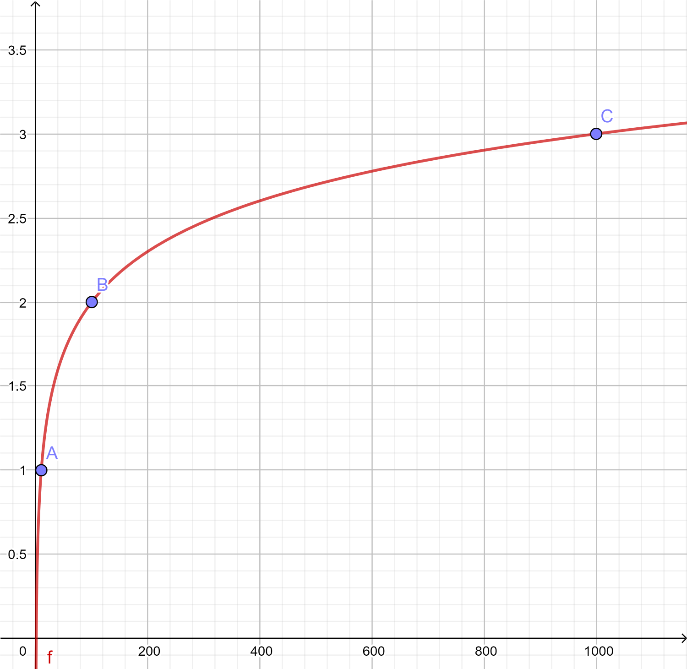

In this lesson, we will cover logs, or logarithms. Logs can seem pretty scary at first, but once completing this lesson, you will become a master!
Logs can help us do many wonderful things. They allow us to work with problems that grow exponentially. Essentially, logs can be seen as the inverse function to exponents. Since addition, multiplication, and exponentiation are the three most fundamental arithmetic operations, we us logs to help us find the exponents. The inverse of addition is subtraction, the inverse of multiplication is division, and the inverse of exponents are logarithms.
Logs were initially invented in the 17th century to speed up calculations and for this reason, many modern day scientist have adopted it. Before calculators and computers became available, logarithms were used to vastly reduced the time needed to multiply numbers with many digits. Today, it is used for astronomy, physics, biology, engineering, and many more!
Note: We still want to solve for X.

Solve: \(f(x)=log_2 (x) \\[.25cm]\)
\[\begin{align} &\text{Domain: } \cssId{Step1-1}{ (0,\infty)} \\[3px] &\text{Range: } \cssId{Step1-2}{ (-\infty, \infty)} \\[3px] &\text{End Behavior: } \\[3px] &\hspace{1cm} \text{As } x \rightarrow \cssId{Step1-3}{ \infty } , \hspace{.25cm} f(x) \rightarrow \infty \\[3px] &\hspace{1cm} \text{As } x \rightarrow \cssId{Step1-4}{ 0 } , \hspace{.25cm} f(x) \rightarrow - \infty \\[3px] &\text{X-intercept: } \cssId{Step1-5}{ (0,1)} \\[3px] &\text{Asymptote: } \cssId{Step1-6}{ 0} \end{align}\]
Solve: \(f(x)=log_{\frac{1}{3}}(x)\\[.25cm]\)
\[\begin{align} &\text{Domain: } \cssId{Step2-1}{ (0,\infty)} \\[3px] &\text{Range: } \cssId{Step2-2}{ (-\infty, \infty)} \\[3px] &\text{End Behavior: } \\[3px] &\hspace{1cm} \text{As } x \rightarrow \cssId{Step2-3}{ \infty } , \hspace{.25cm} f(x) \rightarrow \infty \\[3px] &\hspace{1cm} \text{As } x \rightarrow \cssId{Step2-4}{ 0 } , \hspace{.25cm} f(x) \rightarrow - \infty \\[3px] &\text{X-intercept: } \cssId{Step2-5}{ (1,0)} \\[3px] &\text{Asymptote: } \cssId{Step2-6}{ 0} \end{align}\]
Solve: \(f(x)=log_4 (x-1)\\[.25cm]\)
\[\begin{align} &\text{Domain: } \cssId{Step3-1}{ (1,\infty)} \\[3px] &\text{Range: } \cssId{Step3-2}{ (-\infty, \infty)} \\[3px] &\text{End Behavior: } \\[3px] &\hspace{1cm} \text{As } x \rightarrow \cssId{Step3-3}{ \infty } , \hspace{.25cm} f(x) \rightarrow \infty \\[3px] &\hspace{1cm} \text{As } x \rightarrow \cssId{Step3-4}{ 1 } , \hspace{.25cm} f(x) \rightarrow - \infty \\[3px] &\text{X-intercept: } \cssId{Step3-5}{ (2,0)} \\[3px] &\text{Asymptote: } \cssId{Step3-6}{ 1} \end{align}\]
Solve: \(f(x)=log_3 (x-2)\\[.25cm]\)
\[\begin{align} &\text{Domain: } \cssId{Step4-1}{ (2,\infty)} \\[3px] &\text{Range: } \cssId{Step4-2}{ (-\infty, \infty)} \\[3px] &\text{End Behavior: } \\[3px] &\hspace{1cm} \text{As } x \rightarrow \cssId{Step4-3}{ \infty } , \hspace{.25cm} f(x) \rightarrow \infty \\[3px] &\hspace{1cm} \text{As } x \rightarrow \cssId{Step4-4}{ 2 } , \hspace{.25cm} f(x) \rightarrow - \infty \\[3px] &\text{X-intercept: } \cssId{Step4-5}{ (3,0)} \\[3px] &\text{Asymptote: } \cssId{Step4-6}{ 2} \end{align}\]
Solve: \(f(x)=log_{\frac{1}{2}}(x+9)+4\\[.25cm]\)
\[\begin{align} &\text{Domain: } \cssId{Step5-1}{ (-9,\infty)} \\[3px] &\text{Range: } \cssId{Step5-2}{ (-\infty, \infty)} \\[3px] &\text{End Behavior: } \\[3px] &\hspace{1cm} \text{As } x \rightarrow \cssId{Step5-3}{ \infty } , \hspace{.25cm} f(x) \rightarrow \infty \\[3px] &\hspace{1cm} \text{As } x \rightarrow \cssId{Step5-4}{ -9 } , \hspace{.25cm} f(x) \rightarrow - \infty \\[3px] &\text{X-intercept: } \cssId{Step5-5}{ (7,0)} \\[3px] &\text{Asymptote: } \cssId{Step5-6}{ -9} \end{align}\]
Solve: \(f(x)=log_{5}(x-2)+1\\[.25cm]\)
\[\begin{align} &\text{Domain: } \cssId{Step6-1}{ (-2,\infty)} \\[3px] &\text{Range: } \cssId{Step6-2}{ (-\infty, \infty)} \\[3px] &\text{End Behavior: } \\[3px] &\hspace{1cm} \text{As } x \rightarrow \cssId{Step6-3}{ \infty } , \hspace{.25cm} f(x) \rightarrow \infty \\[3px] &\hspace{1cm} \text{As } x \rightarrow \cssId{Step6-4}{ -2 } , \hspace{.25cm} f(x) \rightarrow - \infty \\[3px] &\text{X-intercept: } \cssId{Step6-5}{ (\frac{11}{5},0)} \\[3px] &\text{Asymptote: } \cssId{Step6-6}{ 2} \end{align}\]
Solve: \((x+1)^2\)
\[\begin{align} \cssId{Step8-1}{(x+1)^2} &=\cssId{Step8-2}{(x+1)(x+1)} & \cssId{Step8-3}{\text{Step 1}} \\[3px] &\cssId{Step8-4}{{} = x(x+1) + 1(x+1)} & \cssId{Step8-5}{\text{Step 2}} \\[3px] &\cssId{Step8-6}{{} = (x^2+x) + (x+1)} & \cssId{Step8-7}{\text{Step 3}} \\[3px] &\cssId{Step8-8}{{} = x^2 + (x + x) + 1} & \cssId{Step8-9}{\text{Step 4}} \\[3px] &\cssId{Step8-10}{{} = x^2 + 2x + 1} & \cssId{Step8-11}{\text{Step 5}} \end{align}\]